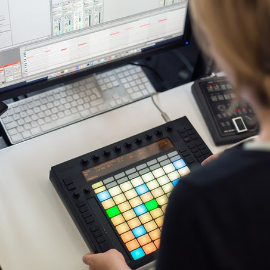
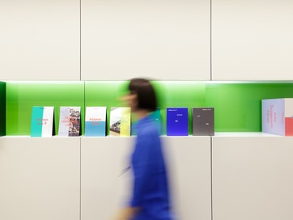
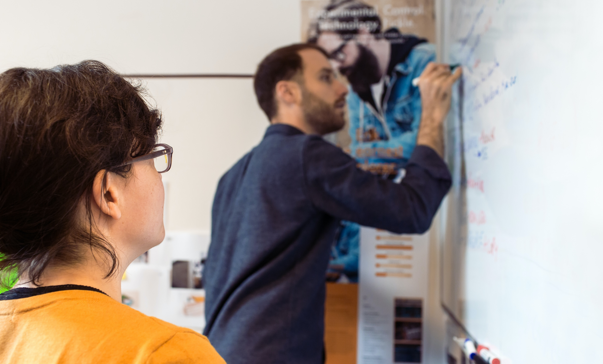

We make Live,Push and Link - unique software and hardware for music creation and performance. With these products our community of users creates amazing things.
Ableton was founded in 1999 and released the first version of live in 2001. Our Products are used by a community of dedicated musicians, sound designers and artists from across the world.


Making music isn't easy. it takes time,effort and learning. But when you're in the flow, it's incredibly rewarding.
We feel the same way about makiing Ableton products. The driving force behind ableton is our passion for what we make, and the people we make it for.
Meet the makers: Ableton developers at work
We are more than 350 people from 30 different countries divided between our headquarters in Berlin and our offices in Los Angeles and Tokyo.
Most of us are active musicians, producers, and DJs, and many of us use Live and Push every day. We come from a wide range of cultural and professional backgrounds. Some of us have PhDs, some are self-taught, and most of us are somewhere in between. What connects us is the shared belief that each of us has the skills and knowledge to contribute to something big: helping to shape the future of music culture.



We believe it takes focus to create truly outstanding instruments. We only work on a few products and we strive to make them great.
Rather than having a one-size-fits-all process, we try to give our people what they need to work their magic and grow. We’ve learned that achieving the best results comes from building teams that are richly diverse, and thus able to explore problems from a wider set of perspectives. We don’t always agree with each other, but opinion and debate are valued and openly encouraged.